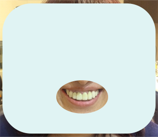

- 歯並びが気になり自信がない
- 歯の着色が気になり自信がない
- 隙間が広さが気になり自信がない
- きれいな歯並びで笑顔に
- 白い歯で笑顔に
- 隙間を気にせず笑顔に
123teethとは『歯』を削る、抜くこと極力行わず現状に、薄い人工の歯をつけ爪の様に接着することにより、ご自身が抱えている『歯』の問題を改善する方法です。
この123teethは、ただ歯の問題を解決するだけでなく、表情を司る筋肉を刺激して顔貌にも変化をもたらします。
お顔のリフトアップ、ほうれい線等のシワが薄くなる等、アンチエイジング効果もあります。 使用材料は、強度の高い歯科用プラスティック（セラミックを75%含んだハイブリッドレジン、もしくはジルコニアを使用します。）
痛くない
削らない
コンプレックス解消
施術例

口角が上がった/フェイスラインがすっきりした/ほうれい線も薄くなった
口元が変わると顔全体が変わる
表情を司る表情筋は口の周りのあります。そして、そこに密接しているのが歯です。なので歯を変えること（歯の形、並びを変えること）によって口元が変わり、顔全体が変わるということです。後は歯が綺麗になることによって「綺麗なものを見せたい！」という心理的欲求が出てくるため、自然と歯を見せる顔付（口角を上げる顔）になり顔全体に変化がでてきます。
|
123teeth
|
歯列矯正
|
従来のラミネートべニア
|
|
|---|---|---|---|
|
ホワイトニング効果
|
◎ 希望の白さへ |
× なし |
◎ 希望の白さへ |
|
治療期間
|
◎ 最短2日~ |
× 2年~ |
〇 最短１か月程度 |
|
見た目の美しさ
|
◎ | △ | ◎ |
123teethは安心の
確立した技術で
お客様に寄り添います
事務職 30歳 女性
私は小さいときに自転車で転んで前歯を損傷してしまいました。歯の植わっている骨まで損傷しており骨と歯が癒着し、矯正もできない状況になりました。もう歯を削り取り、インプラントしかないと言われていた中、この123teethと出会いました。何度か試し合わせをしてもらって満足いくものが仕上がりました。諦めていた自分の歯がなんの苦痛もなくここまで綺麗にしてもらったことで感謝しかありません。123teethに出会えて本当に良かったです。
IT企業社長 52歳 女性
私は小さいころから歯並びが悪くとても気にしていましたが、お年頃になった時に綺麗に歯並びを治してもらいました。が、ある日ピザを食べていたら歯が折れてしまい…あえなくインプラントとなったのですが、仮歯の状態で歯の長さのバランスがおかしく…そこで提案していただいたのが123teethで説明を受け、自分が思っていた問題がすべて解決すると思い、治療をしていただきました。もちろん痛みもなく、とても綺麗にお口の中にセットしていただきました。 そして驚いたのが、歯を変えただけなのに…顔までが変わって！先生がおっしゃっていたようにアンチエイジング効果があるのにびっくりしました。まさか歯でこんなにも良い効果が出るとはおもっていませんでした！本当にありがとうございました。
お問い合わせ・ご予約
LINE、Instagram、専用ダイヤルからお問い合わせください。
事前のご相談
ご来院頂いてのご相談リモートでのご相談(※ご相談に行けないという方にはZoomによるご相談を行っております。カウンセリングを行う前にお写真を送っていただきます。)
精密カウンセリング＆シミュレーション
事前のご相談にて、ご納得頂ければ精密カウンセリング用の分析を行い、それに沿ったシミュレーションを製作。そこで御要望を考慮してすり合わせをし、ご納得頂ければ製作に入ります。
仮合わせ
必要に応じて一度、仮合わせを行います。
最終的なすり合わせをしていきます。（※場合によって省くこともできます）
123teethのセット
完成した123teethをセットしていきます。
メンテナンス
定期的なメンテナンスが必要です。
３～４か月に１回は受診を行うことで、長く美しい見た目と快適な装着感が保てます。最短で2回の来院で完成は可能です。より確実なフィッティングを期すため、仮合わせを含め、3回の来院を推奨いたしております。

我々歯科技工士は「歯」を作るプロです。 そして歯科技工士が作る「歯」は人工臓器であり、お顔の中の一部分です。喜怒哀楽を表現するのも「歯」であり「口元」です。 それを作り出す我々歯科技工士は様々な分析を行い皆様の「お顔」に合った「歯」を作ります。 綺麗な歯並びは貴方の美しい口元を作ります。 その美しい口元は、貴方を素敵な笑顔にしてくれます。 いつまでも素敵な笑顔をあなたに…
123Teeth提携歯科医院
- Q1. 極力削らない、抜かないとのことですが、やはり削る場合もありますか？
- 90％以上の方が削らないで行えています。
少数の方ですが、並びを整えるために少し（0.5ｍｍ程度）削る場合もあります。 - Q2. 123teethを取り付けられない人はいますか？
- できないことはありませんが、噛み合わせの状態によったり、重度の歯周病、歯がグラグラしている方などは要注意です。
先に歯科治療を行う場合もございますので、メンテナンスをこまめにお願いしています。 - Q3. 施術の際、痛みはありますか？
- ほとんど痛みはありません。
まれに、歯に接着する工程でご自身の歯の表面を処理する時に、しみる方がいらっしゃいます。
その際は十分注意して施術しますので、ご安心ください。 - Q4. 装着した部分から虫歯になったり、なりやすいということはありますか？
- 適切に歯磨きができていると、装着したからという理由で虫歯になりやすいということはありません。
ドイツの学会では、削って被せる物よりも123teethのようなラミネートベニヤの方が、虫歯になりにくいという報告もあります。 - Q5. 元に戻すことは可能ですか？
- 基本的に歯を削っていないので、外せば元の状態に戻せます。
外す場合、ご自身の歯を傷つけないよう細心の注意を払って行います。 - Q6. すぐに外れたりしませんか？
- お口の中の状況によって、まれに外れる方もいらっしゃいます。その場合、施術を行なった歯科医院で付け直してもらうのが一番良いです。
状況によってすぐに来院できない場合、装着時に応急処置用の仮止め材をお渡ししていますので、そちらをご利用ください。（この仮止め材は、飲み物は大丈夫ですが、食事はできません） - Q7. 壊れた（欠けたり、割れたり）場合は作り直しですか？
- 頻度にもよりますが、大体はお口の中で修理することができます。
- Q8. 最短で治療する場合、期間はどのくらいかかりますか？
- 1回目：初診（問診、説明）、精密カウンセリング、口腔内チェック、歯の型取り
ここまでを１日（要予約、時間はおおよそ3時間程度いただきます） 2回目：123teethのセット
といった流れになります。2回目の来院までは通常10～14日間の期間が必要です。 - Q9. 好みの色を選べますか？
- 色見本からお好きな色をお選びいただけます。
- Q10. 123teethだけの特徴はどんなところですか？
- 「歯は顔の一部」という考えから、精密カウンセリングと歯科技術の融合した施術が123teethの特徴です。
ゴールデンプロポーション※等を使用しているところは他にもありますが、顔と歯を絡めた分析を行なった上での施術は123teeth独自のものです。
※ゴールデンプロポーションとは、他人からみて最も美しく見える形や配置(黄金比)を指します。 - Q11. 123teethの施術では、保険の適用はできますか？
- 自費治療となります。
123teethは治療の一環ですが、痛みなどの治療ではなく、現状の生活には困らない部分の治療となりますので、ここには保険の適応はありません。
費用面で不安のある方は、ご予約やカウンセリングの際にぜひご相談ください。 - Q12. 施術後のメンテナンスにはどのくらいの費用がかかりますか？
- 年3回のメンテナンスですと、下記のお値段となります。
プロフェッショナルメンテナンス…約1万円×1回
保険クリーニング…約3千円×2回 - Q13. 123teethの使用材料について、メリット・デメリットと特徴はありますか？
- 当院では3種類を中心に使っており、それぞれ下記の通りとなります。
ジルコニア(約7万円)：変化が少なく、いつまでもきれいです。
e-Max(約6万5千円)：ジルコニアと同じくいつまでもきれいです。
ハイブリッドレジン(約4万5千円)：他より安価ですが、維持には注意が必要となります。
経年により艶が落ちてきますのでメンテナンスでの艶出しがおすすめです
※ハイブリッドレジンのみ、ハミガキ粉に研ま剤が入っていないものを使用してください。